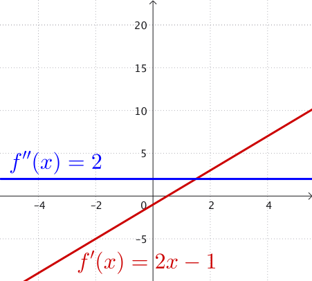
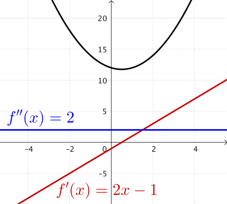
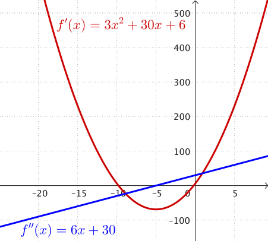
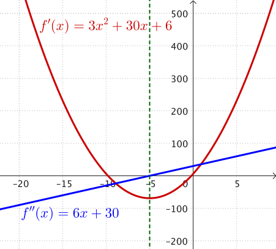

Calculus I
&
Engineering Mathematics 2
Quiz 4
Question 1
Determine the intervals where the graphs of the following functions are concave upwards and where they are concave downward
- $f(x)= x^2-x+12$
- $f(x) = x^3 +15x^2+6x+1$
Question 2
The height $h(t)$ (in metres) of a ball thrown vertically upward is given by \[h(t) = 20t - 5t^2\]
- Find the velocity of the ball at time $t$.
- Determine the time at which the ball reaches its maximum height.
Solution Question 1
|
1. $f(x)= x^2-x+12\,$ $\,\Ra f'(x) = 2x-1\,$ and $\,f''(x) = 2$ Since the second derivative is always positive, the graph is always concave upward. There are no points of inflection. |
  |
Solution Question 1
|
2. $f(x) = x^3 +15x^2+6x+1$ $\Ra f'(x) = 3x^2+30x+6\,$ and $\,f''(x) = 6x+30$ Note that $\,f''(x) = 6x+30 = 0\,$ implies $\,x = -5.$ Then when $x\gt -5$ the graph is concave upwards, when $x\lt -5$ the graph is concave downwards. There is a point of inflection where the concavity changes at $(-5,221).$ |
  |
Solution Question 2
- If $h(t) = 20t - 5t^2$, then velocity is $\,v(t) = h'(t) $ $= 20 - 10t$.
- Max height: We must solve $\,20 - 10t = 0,$ that is $t= 2$ s.